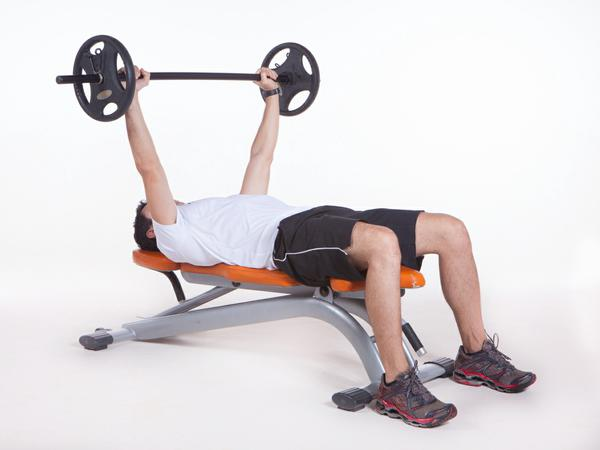
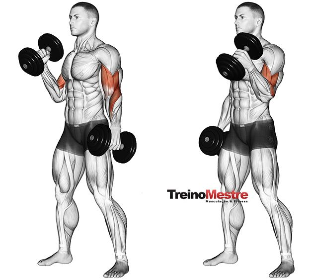
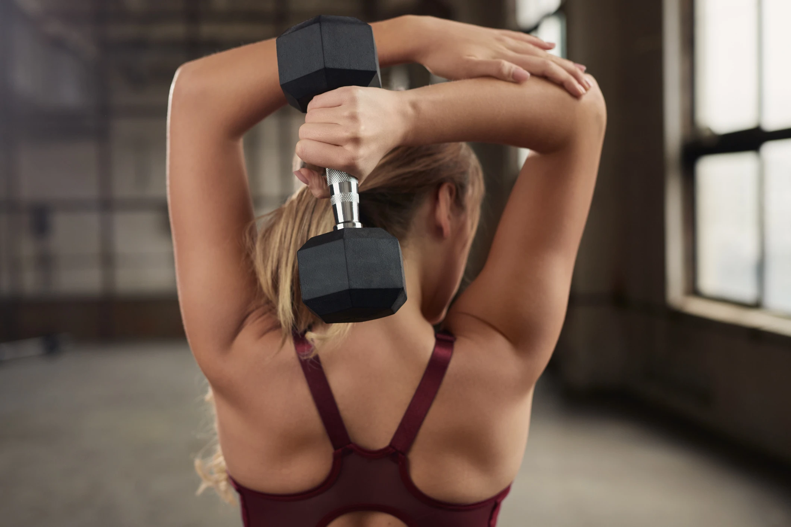
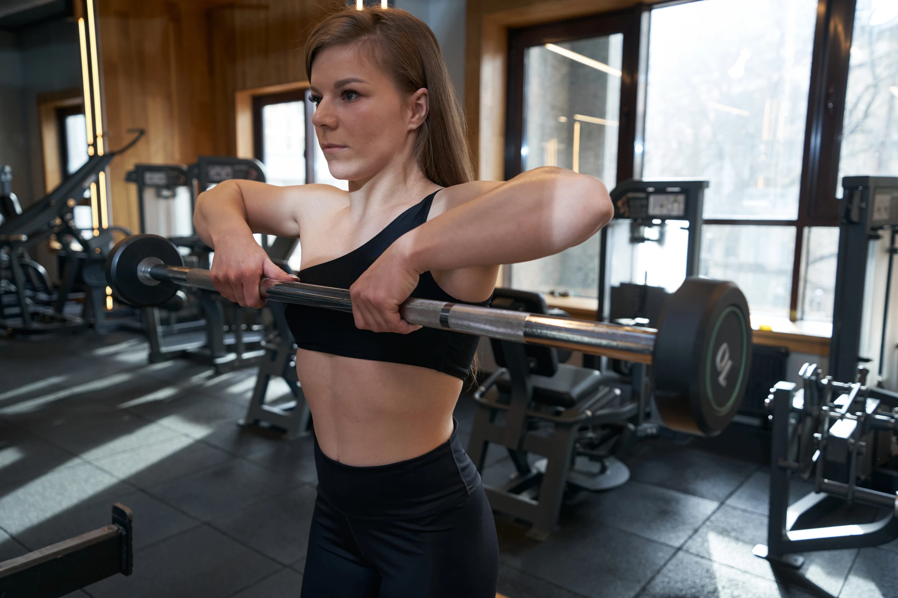

O supino reto é um potente exercício para desenvolver força muscular dos membros superiores, além de ser amplamente utilizado para ganhar massa muscular nos membros inferiores.
O biceps com halteres proporciona maior liberdade de movimento e podem trabalhar o biceps em diversos angulos e com diferentes pegadas
O tríceps francês é uma variação muito interessante para o trabalho muscular da região alvo.
A remada alta é um exercicio que trabalha principalmente os músculos dos ombros e das costas.
